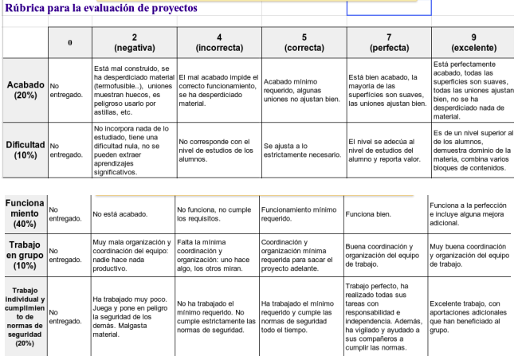

Vamos al taller
Comenzamos la Fase 2.1 de nuestro PUENTE: Construcción de la maqueta sin MECANISMO.
Seguir la documentación de proyecto de nuestro PUENTE que está en vuestro Drive. Solo tenéis que entrar en la hoja de proceso y asumir la construcción de las distintas piezas entre los componentes del grupo.
Mirad la rúbrica para que sepáis si lo estáis haciendo bien.
Muy importante que sigáis las Normas de Seguridad e Higiene en el Taller.
Además debéis repartir convenientemente las tareas dentro del grupo (Anotadlo en la documentación)
Se valorará que cumpla con las condiciones de la propuesta y si el acabado es robusto y resistente (deberá soportar el peso de una mochila llena de libros sin deteriorarse durante 10 segundos). Fijaros bien en el diseño para realizar convenientemente todas las partes y unirlas triangulando para que la estructura sea más resistente.
Después haced las pruebas para ver si resiste.
Se puede decorar como queráis. tenéis disponible una rúbrica de valoración del trabajo realizado, que utilizaremos al final del proceso.
Al final de esta Situación de Aprendizaje tienes una rúbrica que te puede servir para comprobar si estáis haciendo bien el reto.
La documentación del Puente la tienes en tu carpeta de grupo. rescátala y fotocopiala para tenerla siempre a mano en el taller. Guarda la copia en la caja de materiales de tu grupo. en la última página hay unas preguntas que te servirán para comprobar si estáis trabajando bien. será vuestra rúbrica de proyecto.
También puedes usar esta:

También puedes usar la que te deja tu profe en la tarea de classroom.